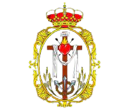

HERMANDAD DE LA SANGRE

Real, Muy Antigua y Fervorosa Hermandad del Santísimo Cristo de la Sangre y Nuestra
Señora de los Dolores.
Los Gitanos
Paso De Santísimo Cristo de la Sangre
La Imagen renacentista del Santísimo Cristo de la Sangre es la obra cumbre de Gaspar del Águila en 1567, inspirada en el de San Agustín de Sevilla. Fue restaurado en 1995 por Rosa María Rodríguez Azogue.
Procesiona en paso barroco diseñado por el ecijano José Belmonte, talla de Antonio Martín y como dorador Antonio Díaz (ambos de Sevilla).
CURIOSIDADES
Es una de las imágenes más devocionales de Écija. Es la Hermandad de los Gitanos, donde en el barrio de éstos (calle Zamoranos, Caleros), la cofradía alarga su estancia para que le canten saetas, le hagan ofrendas, etc.
Santisimo Cristo de la Sangre porta 35 costaleros
Paso De Nuestra Señora de los Dolores

La Dolorosa es obra del cordobés Antonio Poz en 1853. Fue restaurada en 1999 por José Rodríguez Rivero-Carrera. Posee una saya roja de Ojeda, otra blanca de Fernando Sánchez Rosado y otra donada por las camareras.
Procesiona en paso de palio, siendo la orfebrería de Villarreal. Los bordados sobre terciopelo granate en el palio y morado en el manto están enriquecidos con bordados del siglo XVIII, según diseño de Joaquín Ojeda. Los faldones son obra de Rosado. La peana realizada de los respiraderos de su paso antiguo.
CURIOSIDADES
Alterna diadema y corona en su estación de penitencia. Es conocida por todo el pueblo ecijano como La Lola, puesto que es la Hermandad de los Gitanos.
Nuestra Señora de los Dolores porta 35 costaleros
- Sede : Parroquia Mayor de Santa Cruz
- Hermano Mayor : Antonio Lora Viera
- Web : http://hermandadlasangre.es/
- Año de fundación : 1564
- Numero de nazarenos : 500
-
Hábito : - túnica roja con capa blanca, cíngulo de esparto y capillo rojo en el cristo.
- túnica blanca con capa roja, cíngulo rojo de seda y capillo blanco en la virgen.